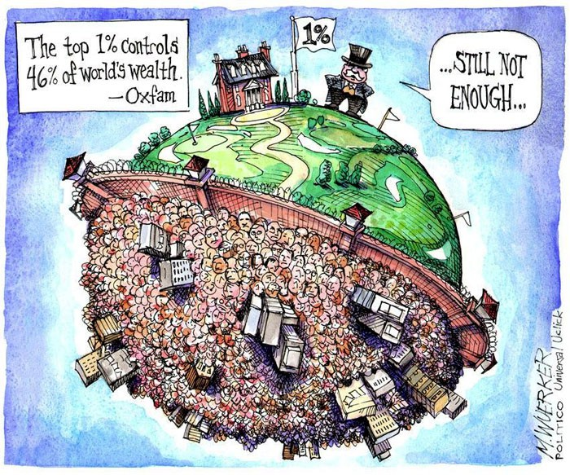

The Impact of the 4th Industrial Revolution on Society and Individuals
The Fourth Industrial Revolution is changing how we live, work, and communicate. It’s reshaping government, education, healthcare, and
commerce—almost every aspect of life.
In the future, it can also change the things we value and the way we value them. It can change our relationships, our opportunities,
and our identities as it changes the physical and virtual worlds we inhabit and even, in some cases, our bodies.
Do we have to be aware about the fouth industrial revolution's changes and especially the AI ? How it's impacting the world around us ? Is it for better or even worse?
Changes for Better?
New technologies have the potential to bring about positive changes. Education and access to information can be improved for billions of people worldwide through powerful computing devices, digital services, and mobile devices, particularly benefiting those in underdeveloped countries.
The social media revolution, represented by platforms like Facebook and Twitter, has given everyone a voice and a way to communicate globally. Over 30% of the world's population uses social media services, creating a true global village and connecting people to global events.
Innovations in technology can bring billions into the global economy, open up new markets, and provide opportunities for learning and earning in new ways. Online shopping, drone delivery services, and biomedical advancements are already transforming convenience, economic prospects, and health.
Biomedical sciences can contribute to healthier lives and longer lifespans, with potential innovations in neuroscience, such as connecting the human brain to computers for enhanced intelligence or simulated experiences.
Fourth Industrial Revolution technologies in automotive safety can reduce road fatalities, insurance costs, and carbon emissions. Autonomous vehicles have the potential to reshape city living spaces and create more human-centered environments.
Digital technology can free workers from automatable tasks, allowing them to focus on complex business issues and providing new tools for creative problem-solving. This shift towards more autonomy and creative solutions is a positive outcome of technological advancements.
Changes for Worse?!!
The Fourth Industrial Revolution has the potential for positive change, but we must be mindful of its negative impacts. Technologies can influence our values, so it's crucial to consider how we build and use them. For instance, prioritizing money over family time can lead to technologies reinforcing that value.
Our relationship with technology is deep, shaping our world, and it's vital to handle it with care from the start. Biotechnology, robotics, and AI bring both advancements and challenges. Controversial issues like designer babies and job-related implants can arise. Moreover, these technologies can be used for creating weapons.
While social media connects people, it also intensifies social divides and enables cyber-bullying and the spread of false information. Setting rules for social media is important, but we must acknowledge that it shapes our values. Additionally, constant connectivity can become a drawback, leading to information overload.
AI can take over us?!!!!!
In the 1st, 2nd, and 3rd industrial revolutions, the focus was primarily on creating physical infrastructure. The 1st revolution saw the mechanization of production, the 2nd brought about mass production and electrification, and the 2rd introduced automation and computerization... Us humans, aren't we becoming gods? We are creating mechanized bodies that can move automatically!!
However, the current phase, often referred to as the Fourth Industrial Revolution, is distinct in that it emphasizes the creation of artificial intelligence (AI) and advanced cognitive systems, essentially artificial brains. This shift poses unique challenges and considerations as we venture into the realm of creating not just physical power but intellectual capabilities that can rival or even surpass human intelligence.
Is the sentence "creations despise the creators" becoming true?!!! Beware...

Changes in Equality
The Fourth Industrial Revolution (4IR) brings powerful technologies and innovation, but there are concerns. The benefits, like higher income and a better life, are mostly going to a small group. This growing inequality can lead to problems like political divides and a lack of trust in institutions.
There's also worry about technology being used for surveillance and making societies vulnerable to attacks. Lessons from past revolutions show that tech and wealth can benefit a few, leaving others behind.
The passage suggests that leaders should focus on making development inclusive and ensuring fair growth. Many people worldwide still haven't benefited from past revolutions, so it's crucial to avoid creating more disparities. 
What about our Privacy?
We value the ability to control what is known about us, and yet we are living in a world where tracking every individual’s personal information is key to delivering more intelligent, personalized services. For example: Facebook tracks what you do so that it knows which content and advertisements are most relevant to you. Smartphones track your location, and you can share that information with apps that recommend places to eat or shop. Retailers analyze your purchase history to recommend products and offer coupons to stimulate more sales. In the future, you’ll walk into a store and the salesperson will immediately have your name, credit rating, marital status, and past purchases flashed to their augmented-reality virtual screen. Technological advances are also broadening the scope of surveillance. In the UK today, an estimated 6 million CCTV cameras are recording activity all over the country. Advances in computing power and artificial intelligence can potentially enable law enforcement agencies to track suspected terrorists by analyzing social networks, government records, and other data. In the future, billions of 3D-printed “smart dust” cameras floating in the air can monitor the activities of humans. From traffic reports to natural disasters, such technology can keep us safer. But it also can watch us when we do not want to be watched. For consumers, businesses that are transparent about their data collection practices and that prioritize consumer privacy can win our loyalty.